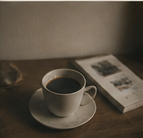

A STUDY OF LIGHT & TIME
Capture the quiet.
让照片成为主角，让交互留有余韵。
LIGHT / PLACE / PEOPLEFRAME — 02
ABOUT THE ARCHIVE
Natural light.
Honest observation.
原站介绍的中文概述：关注人与地方的关系，记录日常里安静的瞬间。
A SCROLL THROUGH LIGHT
一寸滚动，一段光阴。
在下方画面内滚动 ↓

光，留在这里。